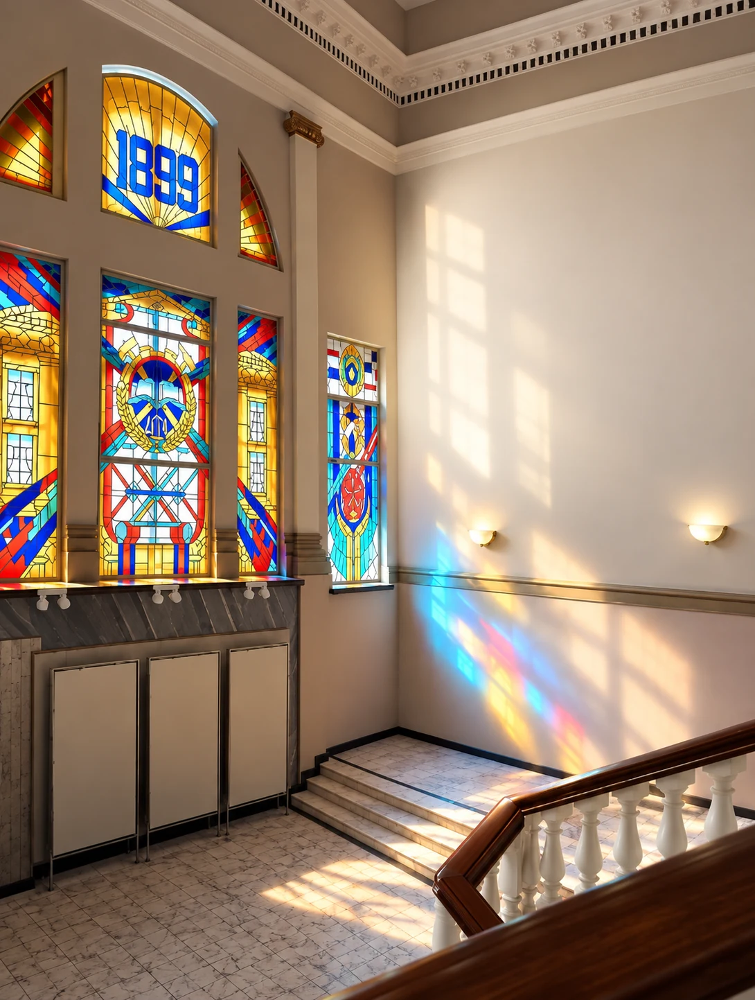
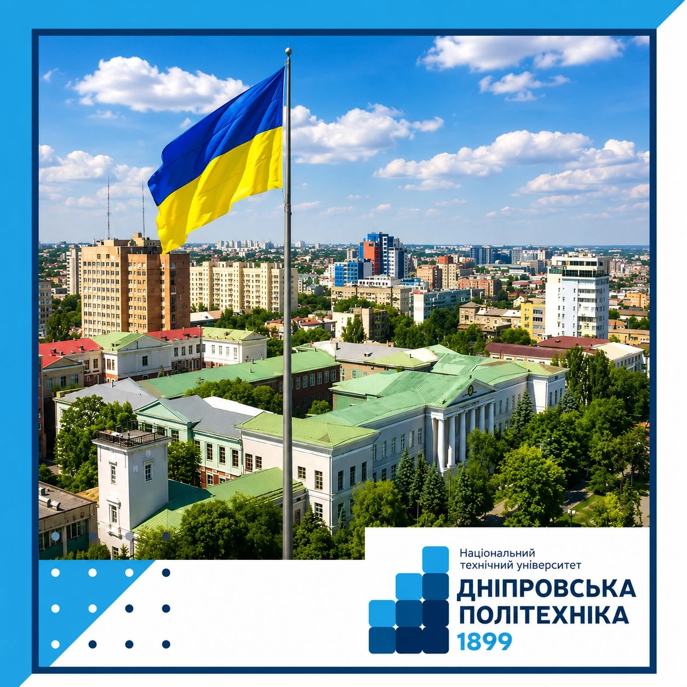

Про університет
Національний технічний університет «Дніпровська політехніка» - це поєднання класичної фундаментальної архітектури, сторічних інженерних традицій та надсучасних ІТ-просторів.
Від гірничої школи до сучасного технічного університету
Університет було засновано у 1899 році як Катеринославське вище гірниче училище. Упродовж свого розвитку заклад послідовно набував статусу гірничого інституту, академії та національного університету. З 2017 року він має назву Національний технічний університет «Дніпровська політехніка».
Сьогодні університет поєднує інженерну школу, ІТ, енергетику, природничі науки, гуманітарні напрями, економіку, управління, міжнародні зв’язки та студентську наукову активність.
На платформі університет показано очима студентів: прості розділи, зрозумілий вступ, особистий кабінет, медіа, контакти та зручний доступ до ключової інформації.

Ми пройшли довгий шлях від першого вищого гірничого закладу освіти
нашої країни до провідного багатопрофільного технологічного університету.
Сьогодні «Дніпровська політехніка» - це не просто навчальний заклад, а потужний науково-дослідний центр, де традиції інженерної класики поєднуються з інноваційними ІТ-трендами, відновлюваною енергетикою та прогресивними гуманітарними студіями.
Наша мета - готувати фахівців, які здатні відповідати на глобальні виклики майбутнього, створювати нові технології та відбудовувати країну.
Що вивчають у Дніпровській політехніці
Університет охоплює широкий спектр освітніх програм - від технічних до гуманітарних.
Інформаційні технології
Комп'ютерні науки, кібербезпека, розробка програмного забезпечення, системний аналіз.
Детальніше →Електроенергетика
Електротехніка, відновлювані джерела енергії, автоматизація виробничих процесів.
Детальніше →Геотехнології
Гірнича справа, геологія, маркшейдерія - традиційні напрями з новою технічною базою.
Детальніше →Економіка та управління
Менеджмент, фінанси, економіка підприємства, маркетинг, облік і аудит.
Детальніше →Ключові спеціальності для твого успішного майбутнього
Навчально-наукові інститути НТУ «ДП»
Університет об'єднує потужні підрозділи, які готують фахівців найвищої ланки:
Інститут електроенергетики
Об'єднує Електротехнічний факультет і Факультет інформаційних технологій: електроенергетика, електромеханіка, комп'ютерні науки, кібербезпека та системний аналіз.
Інститут економіки
Факультет менеджменту та Фінансово-економічний факультет: менеджмент організацій, фінанси і банківська справа, маркетинг, облік, аудит та економічна кібернетика.
Інститут гуманітарних і соціальних наук
Правознавство, історія та політична теорія, філологія і переклад та філософія.
Навчально-науковий інститут природокористування
Гірнича справа, відкриті гірничі роботи, нафтогазова інженерія, екологія та охорона праці.
Навчально-науковий інститут природничих наук та технологій
Геологія та розвідка родовищ, геофізичні методи розвідки, гідрогеологія та хімічна інженерія.
Навчально-науковий інститут державного управління
Публічне управління та адміністрування, місцеве самоврядування.
Міжгалузевий інститут безперервної освіти
Вечірня, заочна та дистанційна форми навчання, довузівська підготовка і підвищення кваліфікації.
Від вищого гірничого училища до національного флагмана
Заснований 16 червня 1899 року як Катеринославське вище гірниче училище, наш університет пройшов шлях від гірничого інституту та державної академії до Національного гірничого університету (НГУ). У 2017 році він став багатопрофільним закладом вищої освіти та отримав сучасну назву - Дніпровська політехніка.
Сьогодні корпуси університету - це не просто навчальні зони, а справжні музеї науки з мармуровими сходами, високими стелями та пам'ятками технічної творчості під відкритим небом.
Тут вивчають усе: від інноваційної кібербезпеки та розробки штучного інтелекту до важкого машинобудування, відновлюваної енергетики та міжнародного права.

Корпуси Дніпровської політехніки: поєднання історичної архітектури та сучасної української ідентичності.Університет у цифрах
Ключові показники НТУ «Дніпровська політехніка» станом на 2024–2025 навчальний рік.
1899
Рік заснування як Катеринославське вище гірниче училище.
~16 000
Студентів навчається на денній, заочній та дистанційній формах.
7 інститутів
Інститут електроенергетики, Інститут економіки, Інститут гуманітарних і соціальних наук та інші.
40+ країн
Міжнародні партнери та студенти з різних куточків світу.